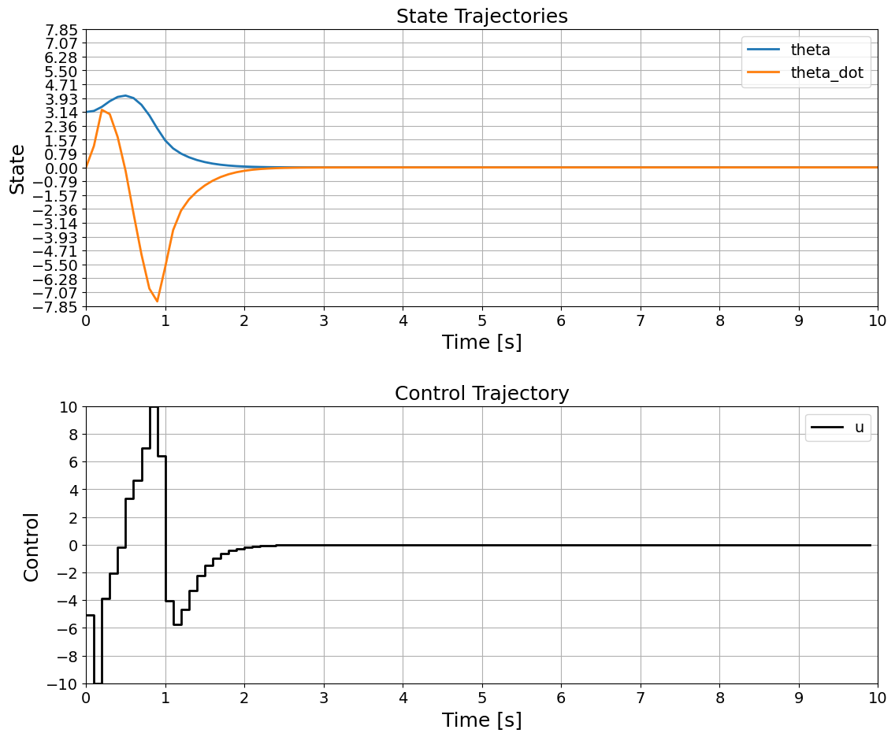

Pendulum on Cart System with MPC Control
In this notebook, we will simulate a pendulum on a cart system and control it using a Model Predictive Controller (MPC). The goal is to bring the pendulum from a hanging down position to an upright position.
1. Define the Pendulum System
First, we will define the pendulum system with friction and the given model.
[1]:
import numpy as np
import casadi as ca
import matplotlib.pyplot as plt
import matplotlib.ticker as ticker
from openmpc.NonlinearMPC import NonlinearSystem
# Define the pendulum system with friction and given model
def pendulum_system():
# Pendulum parameters
m = 0.2
b = 0.1
l = 0.3
I = 0.006
g = 9.81
a = m * g * l / (I + m * l**2)
c = m * l / (I + m * l**2)
th = ca.MX.sym("th")
thDot = ca.MX.sym("thDot")
u = ca.MX.sym("u") # Control input
states = ca.vertcat(th, thDot)
inputs = ca.vertcat(u)
# Pendulum dynamics with friction term
rhs = ca.vertcat(
thDot, # dth/dt
a * ca.sin(th) + c * ca.cos(th) * u - b * thDot # dth_dot/dt
)
return states, inputs, rhs
# Create the NonlinearSystem object
states, inputs, rhs = pendulum_system()
output = states # Output is the state itself
nlsys_pendulum = NonlinearSystem(updfcn=rhs, states=states, inputs=inputs, outfcn=output)
# Discretize the system
dt = 0.1
nlsys_pendulum_discrete = nlsys_pendulum.c2d(dt)
2. Define the MPC Problem
Next, we will define the MPC problem data, including the prediction model, cost matrices, horizon, and input/output constraints.
[2]:
# Example mpcProblemData
mpcProblemData = {
'predictionModel': nlsys_pendulum_discrete,
'T': 20,
'Q': np.eye(2),
'R': np.eye(1),
'QT': 1000 * np.eye(2),
'ulim': 10.0,
'ylim': np.array([np.inf, np.inf]), # No output constraints
'dt': dt
}
# Initial state (pendulum hanging down)
x0 = np.array([np.pi, 0])
3. Define the MPC Controller Function
We define the function to compute the predicted optimal controls using the MPC framework.
[3]:
# Define the MPC controller function
def computePredictedOptimalControls(mpcProblemData, x0):
predictionModel = mpcProblemData['predictionModel']
f = predictionModel.updfcn; g = predictionModel.outfcn
n = predictionModel.n; m = predictionModel.m
# Extract cost matrice and horizon
Q = mpcProblemData['Q']; R = mpcProblemData['R']; QT = mpcProblemData['QT']
T = mpcProblemData['T']
# Extract constraint bounds
ulim = mpcProblemData['ulim']; ylim = mpcProblemData['ylim']
# Setup optimization problem and define variables
opti = ca.Opti()
X = opti.variable(n, T+1); U = opti.variable(m, T)
# Define initial state constraint, cost, input/output constraints
cost = 0
opti.subject_to(X[:, 0] == x0)
for t in range(T):
cost += ca.mtimes([X[:, t].T, Q, X[:, t]])
cost += ca.mtimes([U[:, t].T, R, U[:, t]])
opti.subject_to(X[:, t+1] == f(X[:, t], U[:, t]))
opti.subject_to(opti.bounded(-ylim, g(X[:, t], U[:, t]), ylim))
opti.subject_to(opti.bounded(-ulim, U[:, t], ulim))
cost += ca.mtimes([X[:, T].T, QT, X[:, T]])
opti.minimize(cost)
# Pick solver (and options), solve problem, and return solution
opti.solver('ipopt', {"ipopt": {"max_iter": 1000, "print_level": 0}})
sol = opti.solve()
return sol.value(X), sol.value(U)
def mpcController(mpcProblemData, x):
x_sol, u_sol = computePredictedOptimalControls(mpcProblemData, x)
return u_sol[0]
4. Simulate the System with MPC Control
Next, we simulate the pendulum system with the MPC controller to bring it from hanging down to standing up.
[4]:
# Simulation parameters
Tsim = 10.0 # Total simulation time
N_steps = int(Tsim / dt)
time = np.linspace(0, Tsim, N_steps + 1)
# Initialize arrays to store the simulation results
x_sim = np.zeros((2, N_steps + 1))
u_sim = np.zeros(N_steps)
# Set initial state
x_sim[:, 0] = x0
# Simulation loop
for k in range(N_steps):
# Compute the control input using MPC
u_sim[k] = mpcController(mpcProblemData, x_sim[:, k])
# Apply the control input to the system
x_sim[:, k + 1] = nlsys_pendulum_discrete.updfcn(x_sim[:, k], u_sim[k]).full().flatten()
******************************************************************************
This program contains Ipopt, a library for large-scale nonlinear optimization.
Ipopt is released as open source code under the Eclipse Public License (EPL).
For more information visit https://github.com/coin-or/Ipopt
******************************************************************************
solver : t_proc (avg) t_wall (avg) n_eval
nlp_f | 13.55ms ( 15.97us) 8.31ms ( 9.80us) 848
nlp_g | 84.50ms ( 99.18us) 49.93ms ( 58.60us) 852
nlp_grad_f | 4.77ms ( 32.90us) 2.20ms ( 15.20us) 145
nlp_hess_l | 225.29ms (627.55us) 157.52ms (438.78us) 359
nlp_jac_g | 131.30ms (353.91us) 91.62ms (246.97us) 371
total | 1.05 s ( 1.05 s) 706.70ms (706.70ms) 1
solver : t_proc (avg) t_wall (avg) n_eval
nlp_f | 6.22ms ( 8.43us) 6.18ms ( 8.37us) 738
nlp_g | 39.31ms ( 53.06us) 38.49ms ( 51.94us) 741
nlp_grad_f | 2.06ms ( 12.83us) 2.05ms ( 12.74us) 161
nlp_hess_l | 119.49ms (402.32us) 119.06ms (400.88us) 297
nlp_jac_g | 70.97ms (228.95us) 70.65ms (227.91us) 310
total | 533.35ms (533.35ms) 530.40ms (530.40ms) 1
solver : t_proc (avg) t_wall (avg) n_eval
nlp_f | 4.86ms ( 7.62us) 4.81ms ( 7.54us) 638
nlp_g | 32.99ms ( 51.54us) 32.44ms ( 50.69us) 640
nlp_grad_f | 1.17ms ( 12.23us) 1.17ms ( 12.18us) 96
nlp_hess_l | 80.85ms (394.40us) 80.85ms (394.41us) 205
nlp_jac_g | 47.94ms (225.07us) 47.72ms (224.03us) 213
total | 359.95ms (359.95ms) 358.73ms (358.73ms) 1
solver : t_proc (avg) t_wall (avg) n_eval
nlp_f | 3.60ms ( 8.06us) 3.58ms ( 8.02us) 447
nlp_g | 22.70ms ( 50.79us) 22.20ms ( 49.66us) 447
nlp_grad_f | 1.73ms ( 11.79us) 1.71ms ( 11.66us) 147
nlp_hess_l | 76.73ms (385.58us) 76.62ms (385.00us) 199
nlp_jac_g | 45.50ms (219.79us) 45.52ms (219.91us) 207
total | 313.08ms (313.08ms) 312.06ms (312.06ms) 1
solver : t_proc (avg) t_wall (avg) n_eval
nlp_f | 3.90ms ( 8.82us) 3.85ms ( 8.72us) 442
nlp_g | 23.51ms ( 53.19us) 23.13ms ( 52.34us) 442
nlp_grad_f | 1.52ms ( 12.96us) 1.51ms ( 12.90us) 117
nlp_hess_l | 82.51ms (396.71us) 82.38ms (396.07us) 208
nlp_jac_g | 48.24ms (225.42us) 48.21ms (225.27us) 214
total | 345.24ms (345.24ms) 344.29ms (344.29ms) 1
solver : t_proc (avg) t_wall (avg) n_eval
nlp_f | 5.25ms ( 8.93us) 5.20ms ( 8.85us) 588
nlp_g | 32.82ms ( 55.73us) 32.13ms ( 54.56us) 589
nlp_grad_f | 2.16ms ( 13.65us) 2.11ms ( 13.39us) 158
nlp_hess_l | 104.90ms (413.00us) 104.87ms (412.88us) 254
nlp_jac_g | 61.43ms (235.36us) 61.47ms (235.53us) 261
total | 447.21ms (447.21ms) 445.88ms (445.88ms) 1
solver : t_proc (avg) t_wall (avg) n_eval
nlp_f | 4.66ms ( 8.31us) 4.63ms ( 8.28us) 560
nlp_g | 29.53ms ( 52.63us) 29.07ms ( 51.82us) 561
nlp_grad_f | 1.91ms ( 13.43us) 1.89ms ( 13.32us) 142
nlp_hess_l | 79.56ms (391.92us) 79.58ms (392.03us) 203
nlp_jac_g | 46.69ms (224.46us) 46.97ms (225.80us) 208
total | 347.85ms (347.85ms) 348.62ms (348.62ms) 1
solver : t_proc (avg) t_wall (avg) n_eval
nlp_f | 5.23ms ( 8.57us) 5.21ms ( 8.52us) 611
nlp_g | 33.12ms ( 53.95us) 32.46ms ( 52.86us) 614
nlp_grad_f | 1.82ms ( 12.74us) 1.83ms ( 12.77us) 143
nlp_hess_l | 104.22ms (396.26us) 104.13ms (395.94us) 263
nlp_jac_g | 61.61ms (226.51us) 61.50ms (226.11us) 272
total | 462.45ms (462.45ms) 460.95ms (460.95ms) 1
solver : t_proc (avg) t_wall (avg) n_eval
nlp_f | 2.14ms ( 7.19us) 2.11ms ( 7.09us) 297
nlp_g | 14.41ms ( 48.52us) 14.28ms ( 48.07us) 297
nlp_grad_f | 1.09ms ( 14.04us) 1.09ms ( 13.99us) 78
nlp_hess_l | 28.63ms (386.89us) 28.65ms (387.10us) 74
nlp_jac_g | 17.84ms (222.99us) 17.86ms (223.26us) 80
total | 120.12ms (120.12ms) 119.78ms (119.78ms) 1
solver : t_proc (avg) t_wall (avg) n_eval
nlp_f | 120.00us ( 12.00us) 116.02us ( 11.60us) 10
nlp_g | 623.00us ( 62.30us) 595.16us ( 59.52us) 10
nlp_grad_f | 161.00us ( 14.64us) 159.23us ( 14.48us) 11
nlp_hess_l | 3.85ms (428.11us) 3.86ms (428.88us) 9
nlp_jac_g | 2.54ms (230.91us) 2.56ms (232.95us) 11
total | 14.05ms ( 14.05ms) 14.04ms ( 14.04ms) 1
solver : t_proc (avg) t_wall (avg) n_eval
nlp_f | 107.00us ( 13.38us) 95.21us ( 11.90us) 8
nlp_g | 450.00us ( 56.25us) 442.08us ( 55.26us) 8
nlp_grad_f | 136.00us ( 15.11us) 135.46us ( 15.05us) 9
nlp_hess_l | 3.08ms (440.29us) 3.05ms (435.94us) 7
nlp_jac_g | 2.01ms (223.67us) 2.03ms (225.24us) 9
total | 12.08ms ( 12.08ms) 12.06ms ( 12.06ms) 1
solver : t_proc (avg) t_wall (avg) n_eval
nlp_f | 159.00us ( 19.88us) 156.30us ( 19.54us) 8
nlp_g | 645.00us ( 80.62us) 623.84us ( 77.98us) 8
nlp_grad_f | 186.00us ( 20.67us) 186.17us ( 20.69us) 9
nlp_hess_l | 3.53ms (504.86us) 3.54ms (505.34us) 7
nlp_jac_g | 2.61ms (290.33us) 2.62ms (291.12us) 9
total | 14.67ms ( 14.67ms) 14.67ms ( 14.67ms) 1
solver : t_proc (avg) t_wall (avg) n_eval
nlp_f | 67.00us ( 9.57us) 66.27us ( 9.47us) 7
nlp_g | 372.00us ( 53.14us) 364.21us ( 52.03us) 7
nlp_grad_f | 102.00us ( 12.75us) 104.21us ( 13.03us) 8
nlp_hess_l | 2.27ms (378.67us) 2.28ms (380.65us) 6
nlp_jac_g | 1.68ms (210.25us) 1.69ms (211.12us) 8
total | 9.13ms ( 9.13ms) 9.12ms ( 9.12ms) 1
solver : t_proc (avg) t_wall (avg) n_eval
nlp_f | 98.00us ( 14.00us) 92.70us ( 13.24us) 7
nlp_g | 433.00us ( 61.86us) 407.71us ( 58.24us) 7
nlp_grad_f | 107.00us ( 13.38us) 107.50us ( 13.44us) 8
nlp_hess_l | 2.27ms (378.33us) 2.27ms (379.08us) 6
nlp_jac_g | 1.76ms (219.38us) 1.76ms (219.44us) 8
total | 9.49ms ( 9.49ms) 9.50ms ( 9.50ms) 1
solver : t_proc (avg) t_wall (avg) n_eval
nlp_f | 71.00us ( 10.14us) 68.99us ( 9.86us) 7
nlp_g | 384.00us ( 54.86us) 375.19us ( 53.60us) 7
nlp_grad_f | 117.00us ( 14.62us) 116.25us ( 14.53us) 8
nlp_hess_l | 2.30ms (382.83us) 2.30ms (383.23us) 6
nlp_jac_g | 1.78ms (222.25us) 1.78ms (222.68us) 8
total | 9.34ms ( 9.34ms) 9.33ms ( 9.33ms) 1
solver : t_proc (avg) t_wall (avg) n_eval
nlp_f | 93.00us ( 13.29us) 90.94us ( 12.99us) 7
nlp_g | 430.00us ( 61.43us) 419.55us ( 59.94us) 7
nlp_grad_f | 118.00us ( 14.75us) 117.86us ( 14.73us) 8
nlp_hess_l | 2.47ms (411.00us) 2.47ms (411.78us) 6
nlp_jac_g | 1.82ms (227.50us) 1.83ms (228.13us) 8
total | 10.02ms ( 10.02ms) 10.01ms ( 10.01ms) 1
solver : t_proc (avg) t_wall (avg) n_eval
nlp_f | 77.00us ( 11.00us) 74.86us ( 10.69us) 7
nlp_g | 386.00us ( 55.14us) 381.09us ( 54.44us) 7
nlp_grad_f | 115.00us ( 14.38us) 114.31us ( 14.29us) 8
nlp_hess_l | 2.29ms (382.33us) 2.30ms (383.25us) 6
nlp_jac_g | 1.79ms (223.38us) 1.79ms (224.09us) 8
total | 9.48ms ( 9.48ms) 9.47ms ( 9.47ms) 1
solver : t_proc (avg) t_wall (avg) n_eval
nlp_f | 89.00us ( 12.71us) 82.98us ( 11.85us) 7
nlp_g | 393.00us ( 56.14us) 384.54us ( 54.93us) 7
nlp_grad_f | 120.00us ( 15.00us) 121.59us ( 15.20us) 8
nlp_hess_l | 2.26ms (377.33us) 2.27ms (377.85us) 6
nlp_jac_g | 1.73ms (216.38us) 1.74ms (216.91us) 8
total | 9.43ms ( 9.43ms) 9.37ms ( 9.37ms) 1
solver : t_proc (avg) t_wall (avg) n_eval
nlp_f | 54.00us ( 9.00us) 49.65us ( 8.27us) 6
nlp_g | 330.00us ( 55.00us) 326.03us ( 54.34us) 6
nlp_grad_f | 92.00us ( 13.14us) 93.16us ( 13.31us) 7
nlp_hess_l | 1.90ms (380.20us) 1.90ms (380.03us) 5
nlp_jac_g | 1.53ms (218.29us) 1.52ms (217.72us) 7
total | 7.90ms ( 7.90ms) 7.88ms ( 7.88ms) 1
solver : t_proc (avg) t_wall (avg) n_eval
nlp_f | 68.00us ( 11.33us) 64.88us ( 10.81us) 6
nlp_g | 327.00us ( 54.50us) 321.90us ( 53.65us) 6
nlp_grad_f | 90.00us ( 12.86us) 89.28us ( 12.75us) 7
nlp_hess_l | 2.05ms (409.40us) 2.05ms (409.84us) 5
nlp_jac_g | 1.54ms (219.71us) 1.53ms (218.32us) 7
total | 8.33ms ( 8.33ms) 8.30ms ( 8.30ms) 1
solver : t_proc (avg) t_wall (avg) n_eval
nlp_f | 183.00us ( 30.50us) 178.58us ( 29.76us) 6
nlp_g | 648.00us (108.00us) 628.60us (104.77us) 6
nlp_grad_f | 231.00us ( 33.00us) 229.53us ( 32.79us) 7
nlp_hess_l | 3.62ms (725.00us) 3.64ms (727.64us) 5
nlp_jac_g | 2.64ms (377.43us) 2.65ms (378.73us) 7
total | 15.06ms ( 15.06ms) 15.05ms ( 15.05ms) 1
solver : t_proc (avg) t_wall (avg) n_eval
nlp_f | 150.00us ( 25.00us) 145.89us ( 24.31us) 6
nlp_g | 528.00us ( 88.00us) 513.89us ( 85.65us) 6
nlp_grad_f | 188.00us ( 26.86us) 186.62us ( 26.66us) 7
nlp_hess_l | 3.13ms (625.40us) 3.13ms (625.92us) 5
nlp_jac_g | 2.27ms (324.00us) 2.27ms (324.75us) 7
total | 12.82ms ( 12.82ms) 12.81ms ( 12.81ms) 1
solver : t_proc (avg) t_wall (avg) n_eval
nlp_f | 172.00us ( 28.67us) 168.25us ( 28.04us) 6
nlp_g | 644.00us (107.33us) 619.99us (103.33us) 6
nlp_grad_f | 180.00us ( 25.71us) 177.23us ( 25.32us) 7
nlp_hess_l | 3.39ms (678.60us) 3.41ms (681.73us) 5
nlp_jac_g | 2.42ms (345.71us) 2.42ms (346.41us) 7
total | 14.36ms ( 14.36ms) 14.32ms ( 14.32ms) 1
solver : t_proc (avg) t_wall (avg) n_eval
nlp_f | 149.00us ( 24.83us) 146.58us ( 24.43us) 6
nlp_g | 541.00us ( 90.17us) 529.86us ( 88.31us) 6
nlp_grad_f | 171.00us ( 24.43us) 171.08us ( 24.44us) 7
nlp_hess_l | 3.08ms (617.00us) 3.09ms (618.87us) 5
nlp_jac_g | 2.34ms (334.86us) 2.35ms (335.89us) 7
total | 13.04ms ( 13.04ms) 13.04ms ( 13.04ms) 1
solver : t_proc (avg) t_wall (avg) n_eval
nlp_f | 85.00us ( 14.17us) 84.12us ( 14.02us) 6
nlp_g | 442.00us ( 73.67us) 432.44us ( 72.07us) 6
nlp_grad_f | 126.00us ( 18.00us) 126.46us ( 18.07us) 7
nlp_hess_l | 2.95ms (589.40us) 2.93ms (585.29us) 5
nlp_jac_g | 2.11ms (301.57us) 2.10ms (300.44us) 7
total | 11.85ms ( 11.85ms) 11.82ms ( 11.82ms) 1
solver : t_proc (avg) t_wall (avg) n_eval
nlp_f | 98.00us ( 16.33us) 96.99us ( 16.16us) 6
nlp_g | 427.00us ( 71.17us) 418.25us ( 69.71us) 6
nlp_grad_f | 126.00us ( 18.00us) 125.94us ( 17.99us) 7
nlp_hess_l | 2.11ms (421.80us) 2.12ms (423.05us) 5
nlp_jac_g | 1.65ms (235.14us) 1.65ms (236.07us) 7
total | 9.16ms ( 9.16ms) 9.15ms ( 9.15ms) 1
solver : t_proc (avg) t_wall (avg) n_eval
nlp_f | 75.00us ( 12.50us) 70.45us ( 11.74us) 6
nlp_g | 345.00us ( 57.50us) 338.05us ( 56.34us) 6
nlp_grad_f | 100.00us ( 14.29us) 98.58us ( 14.08us) 7
nlp_hess_l | 2.12ms (423.80us) 2.13ms (425.07us) 5
nlp_jac_g | 1.60ms (228.14us) 1.60ms (228.29us) 7
total | 8.61ms ( 8.61ms) 8.60ms ( 8.60ms) 1
solver : t_proc (avg) t_wall (avg) n_eval
nlp_f | 72.00us ( 12.00us) 69.81us ( 11.63us) 6
nlp_g | 358.00us ( 59.67us) 348.15us ( 58.03us) 6
nlp_grad_f | 106.00us ( 15.14us) 107.03us ( 15.29us) 7
nlp_hess_l | 2.09ms (418.40us) 2.10ms (419.39us) 5
nlp_jac_g | 1.67ms (239.00us) 1.68ms (239.44us) 7
total | 8.76ms ( 8.76ms) 8.75ms ( 8.75ms) 1
solver : t_proc (avg) t_wall (avg) n_eval
nlp_f | 118.00us ( 19.67us) 115.41us ( 19.24us) 6
nlp_g | 405.00us ( 67.50us) 396.11us ( 66.02us) 6
nlp_grad_f | 167.00us ( 23.86us) 165.42us ( 23.63us) 7
nlp_hess_l | 2.08ms (416.80us) 2.09ms (417.46us) 5
nlp_jac_g | 1.76ms (250.86us) 1.76ms (251.64us) 7
total | 9.24ms ( 9.24ms) 9.24ms ( 9.24ms) 1
solver : t_proc (avg) t_wall (avg) n_eval
nlp_f | 286.00us ( 47.67us) 279.06us ( 46.51us) 6
nlp_g | 722.00us (120.33us) 695.53us (115.92us) 6
nlp_grad_f | 249.00us ( 35.57us) 247.75us ( 35.39us) 7
nlp_hess_l | 2.72ms (544.80us) 2.74ms (548.27us) 5
nlp_jac_g | 2.12ms (302.14us) 2.13ms (303.74us) 7
total | 13.66ms ( 13.66ms) 13.66ms ( 13.66ms) 1
solver : t_proc (avg) t_wall (avg) n_eval
nlp_f | 101.00us ( 16.83us) 96.28us ( 16.05us) 6
nlp_g | 355.00us ( 59.17us) 348.38us ( 58.06us) 6
nlp_grad_f | 123.00us ( 17.57us) 124.60us ( 17.80us) 7
nlp_hess_l | 2.08ms (416.80us) 2.09ms (418.17us) 5
nlp_jac_g | 1.66ms (237.57us) 1.66ms (236.87us) 7
total | 9.05ms ( 9.05ms) 9.02ms ( 9.02ms) 1
solver : t_proc (avg) t_wall (avg) n_eval
nlp_f | 126.00us ( 21.00us) 121.12us ( 20.19us) 6
nlp_g | 423.00us ( 70.50us) 410.88us ( 68.48us) 6
nlp_grad_f | 136.00us ( 19.43us) 135.09us ( 19.30us) 7
nlp_hess_l | 2.21ms (441.20us) 2.21ms (442.59us) 5
nlp_jac_g | 1.74ms (249.00us) 1.75ms (249.85us) 7
total | 9.62ms ( 9.62ms) 9.60ms ( 9.60ms) 1
solver : t_proc (avg) t_wall (avg) n_eval
nlp_f | 91.00us ( 15.17us) 85.61us ( 14.27us) 6
nlp_g | 369.00us ( 61.50us) 359.78us ( 59.96us) 6
nlp_grad_f | 110.00us ( 15.71us) 110.83us ( 15.83us) 7
nlp_hess_l | 2.23ms (445.40us) 2.23ms (446.60us) 5
nlp_jac_g | 1.67ms (238.43us) 1.68ms (239.45us) 7
total | 9.64ms ( 9.64ms) 9.64ms ( 9.64ms) 1
solver : t_proc (avg) t_wall (avg) n_eval
nlp_f | 98.00us ( 16.33us) 96.73us ( 16.12us) 6
nlp_g | 419.00us ( 69.83us) 420.46us ( 70.08us) 6
nlp_grad_f | 120.00us ( 17.14us) 120.54us ( 17.22us) 7
nlp_hess_l | 2.11ms (421.80us) 2.12ms (423.17us) 5
nlp_jac_g | 1.79ms (256.00us) 1.80ms (256.72us) 7
total | 9.83ms ( 9.83ms) 9.86ms ( 9.86ms) 1
solver : t_proc (avg) t_wall (avg) n_eval
nlp_f | 82.00us ( 13.67us) 80.54us ( 13.42us) 6
nlp_g | 395.00us ( 65.83us) 387.61us ( 64.60us) 6
nlp_grad_f | 130.00us ( 18.57us) 130.84us ( 18.69us) 7
nlp_hess_l | 2.08ms (415.80us) 2.08ms (416.46us) 5
nlp_jac_g | 1.74ms (248.43us) 1.75ms (249.81us) 7
total | 9.17ms ( 9.17ms) 9.16ms ( 9.16ms) 1
solver : t_proc (avg) t_wall (avg) n_eval
nlp_f | 90.00us ( 15.00us) 92.97us ( 15.50us) 6
nlp_g | 379.00us ( 63.17us) 442.64us ( 73.77us) 6
nlp_grad_f | 115.00us ( 16.43us) 115.84us ( 16.55us) 7
nlp_hess_l | 2.02ms (404.80us) 2.03ms (406.09us) 5
nlp_jac_g | 1.62ms (232.00us) 1.63ms (232.97us) 7
total | 8.89ms ( 8.89ms) 8.95ms ( 8.95ms) 1
solver : t_proc (avg) t_wall (avg) n_eval
nlp_f | 73.00us ( 12.17us) 69.79us ( 11.63us) 6
nlp_g | 333.00us ( 55.50us) 325.00us ( 54.17us) 6
nlp_grad_f | 89.00us ( 12.71us) 88.29us ( 12.61us) 7
nlp_hess_l | 1.87ms (374.40us) 1.87ms (374.76us) 5
nlp_jac_g | 1.50ms (213.86us) 1.50ms (214.15us) 7
total | 8.11ms ( 8.11ms) 8.13ms ( 8.13ms) 1
solver : t_proc (avg) t_wall (avg) n_eval
nlp_f | 88.00us ( 12.57us) 84.94us ( 12.13us) 7
nlp_g | 405.00us ( 57.86us) 396.44us ( 56.63us) 7
nlp_grad_f | 99.00us ( 14.14us) 98.57us ( 14.08us) 7
nlp_hess_l | 1.98ms (395.20us) 1.98ms (395.89us) 5
nlp_jac_g | 1.57ms (225.00us) 1.58ms (226.02us) 7
total | 8.84ms ( 8.84ms) 8.83ms ( 8.83ms) 1
solver : t_proc (avg) t_wall (avg) n_eval
nlp_f | 64.00us ( 10.67us) 59.70us ( 9.95us) 6
nlp_g | 299.00us ( 49.83us) 295.06us ( 49.18us) 6
nlp_grad_f | 91.00us ( 13.00us) 89.67us ( 12.81us) 7
nlp_hess_l | 1.88ms (375.20us) 1.86ms (371.92us) 5
nlp_jac_g | 1.47ms (210.43us) 1.48ms (211.15us) 7
total | 7.70ms ( 7.70ms) 7.67ms ( 7.67ms) 1
solver : t_proc (avg) t_wall (avg) n_eval
nlp_f | 62.00us ( 10.33us) 57.39us ( 9.56us) 6
nlp_g | 321.00us ( 53.50us) 314.21us ( 52.37us) 6
nlp_grad_f | 88.00us ( 12.57us) 86.26us ( 12.32us) 7
nlp_hess_l | 1.92ms (384.00us) 1.92ms (384.42us) 5
nlp_jac_g | 1.52ms (216.86us) 1.52ms (217.42us) 7
total | 8.05ms ( 8.05ms) 7.99ms ( 7.99ms) 1
solver : t_proc (avg) t_wall (avg) n_eval
nlp_f | 62.00us ( 10.33us) 57.60us ( 9.60us) 6
nlp_g | 325.00us ( 54.17us) 320.30us ( 53.38us) 6
nlp_grad_f | 86.00us ( 12.29us) 86.22us ( 12.32us) 7
nlp_hess_l | 2.05ms (410.60us) 2.06ms (411.17us) 5
nlp_jac_g | 1.52ms (216.86us) 1.52ms (217.13us) 7
total | 8.20ms ( 8.20ms) 8.18ms ( 8.18ms) 1
solver : t_proc (avg) t_wall (avg) n_eval
nlp_f | 54.00us ( 9.00us) 52.70us ( 8.78us) 6
nlp_g | 332.00us ( 55.33us) 317.40us ( 52.90us) 6
nlp_grad_f | 89.00us ( 12.71us) 89.55us ( 12.79us) 7
nlp_hess_l | 1.93ms (385.80us) 1.93ms (386.14us) 5
nlp_jac_g | 1.52ms (216.71us) 1.52ms (217.09us) 7
total | 8.09ms ( 8.09ms) 8.08ms ( 8.08ms) 1
solver : t_proc (avg) t_wall (avg) n_eval
nlp_f | 66.00us ( 11.00us) 60.78us ( 10.13us) 6
nlp_g | 338.00us ( 56.33us) 301.06us ( 50.18us) 6
nlp_grad_f | 80.00us ( 11.43us) 80.14us ( 11.45us) 7
nlp_hess_l | 1.90ms (379.00us) 1.90ms (380.09us) 5
nlp_jac_g | 1.43ms (204.57us) 1.44ms (205.02us) 7
total | 7.98ms ( 7.98ms) 7.93ms ( 7.93ms) 1
solver : t_proc (avg) t_wall (avg) n_eval
nlp_f | 75.00us ( 12.50us) 73.72us ( 12.29us) 6
nlp_g | 372.00us ( 62.00us) 358.94us ( 59.82us) 6
nlp_grad_f | 100.00us ( 14.29us) 98.16us ( 14.02us) 7
nlp_hess_l | 2.00ms (401.00us) 1.99ms (397.74us) 5
nlp_jac_g | 1.63ms (232.71us) 1.60ms (229.18us) 7
total | 8.59ms ( 8.59ms) 8.53ms ( 8.53ms) 1
solver : t_proc (avg) t_wall (avg) n_eval
nlp_f | 44.00us ( 7.33us) 43.73us ( 7.29us) 6
nlp_g | 283.00us ( 47.17us) 278.24us ( 46.37us) 6
nlp_grad_f | 86.00us ( 12.29us) 86.28us ( 12.33us) 7
nlp_hess_l | 1.72ms (343.40us) 1.72ms (344.12us) 5
nlp_jac_g | 1.41ms (201.43us) 1.41ms (201.71us) 7
total | 7.16ms ( 7.16ms) 7.15ms ( 7.15ms) 1
solver : t_proc (avg) t_wall (avg) n_eval
nlp_f | 60.00us ( 10.00us) 58.71us ( 9.79us) 6
nlp_g | 327.00us ( 54.50us) 320.81us ( 53.47us) 6
nlp_grad_f | 95.00us ( 13.57us) 92.93us ( 13.28us) 7
nlp_hess_l | 2.00ms (400.00us) 2.00ms (400.79us) 5
nlp_jac_g | 1.54ms (220.14us) 1.54ms (220.42us) 7
total | 8.08ms ( 8.08ms) 8.08ms ( 8.08ms) 1
solver : t_proc (avg) t_wall (avg) n_eval
nlp_f | 109.00us ( 18.17us) 102.80us ( 17.13us) 6
nlp_g | 496.00us ( 82.67us) 485.80us ( 80.97us) 6
nlp_grad_f | 135.00us ( 19.29us) 135.10us ( 19.30us) 7
nlp_hess_l | 2.88ms (575.60us) 2.88ms (576.55us) 5
nlp_jac_g | 2.07ms (296.00us) 2.05ms (292.51us) 7
total | 11.74ms ( 11.74ms) 11.70ms ( 11.70ms) 1
solver : t_proc (avg) t_wall (avg) n_eval
nlp_f | 71.00us ( 11.83us) 67.07us ( 11.18us) 6
nlp_g | 396.00us ( 66.00us) 359.85us ( 59.98us) 6
nlp_grad_f | 97.00us ( 13.86us) 96.35us ( 13.76us) 7
nlp_hess_l | 1.99ms (398.00us) 1.99ms (398.88us) 5
nlp_jac_g | 1.68ms (239.86us) 1.66ms (237.81us) 7
total | 8.48ms ( 8.48ms) 8.43ms ( 8.43ms) 1
solver : t_proc (avg) t_wall (avg) n_eval
nlp_f | 85.00us ( 14.17us) 83.91us ( 13.99us) 6
nlp_g | 373.00us ( 62.17us) 366.54us ( 61.09us) 6
nlp_grad_f | 105.00us ( 15.00us) 106.05us ( 15.15us) 7
nlp_hess_l | 2.02ms (403.20us) 2.02ms (403.78us) 5
nlp_jac_g | 1.69ms (241.14us) 1.68ms (239.39us) 7
total | 8.61ms ( 8.61ms) 8.59ms ( 8.59ms) 1
solver : t_proc (avg) t_wall (avg) n_eval
nlp_f | 152.00us ( 25.33us) 143.87us ( 23.98us) 6
nlp_g | 543.00us ( 90.50us) 526.16us ( 87.69us) 6
nlp_grad_f | 141.00us ( 20.14us) 139.57us ( 19.94us) 7
nlp_hess_l | 2.97ms (595.00us) 2.97ms (593.15us) 5
nlp_jac_g | 1.93ms (275.29us) 1.93ms (276.13us) 7
total | 11.85ms ( 11.85ms) 11.85ms ( 11.85ms) 1
solver : t_proc (avg) t_wall (avg) n_eval
nlp_f | 81.00us ( 13.50us) 77.78us ( 12.96us) 6
nlp_g | 345.00us ( 57.50us) 339.14us ( 56.52us) 6
nlp_grad_f | 123.00us ( 17.57us) 121.00us ( 17.29us) 7
nlp_hess_l | 1.96ms (391.20us) 1.96ms (391.92us) 5
nlp_jac_g | 1.64ms (234.00us) 1.64ms (234.69us) 7
total | 8.43ms ( 8.43ms) 8.43ms ( 8.43ms) 1
solver : t_proc (avg) t_wall (avg) n_eval
nlp_f | 142.00us ( 23.67us) 135.21us ( 22.53us) 6
nlp_g | 469.00us ( 78.17us) 454.61us ( 75.77us) 6
nlp_grad_f | 125.00us ( 17.86us) 123.03us ( 17.58us) 7
nlp_hess_l | 2.51ms (502.60us) 2.54ms (508.90us) 5
nlp_jac_g | 1.88ms (269.14us) 1.89ms (269.63us) 7
total | 10.80ms ( 10.80ms) 10.82ms ( 10.82ms) 1
solver : t_proc (avg) t_wall (avg) n_eval
nlp_f | 88.00us ( 14.67us) 83.91us ( 13.99us) 6
nlp_g | 344.00us ( 57.33us) 338.64us ( 56.44us) 6
nlp_grad_f | 114.00us ( 16.29us) 114.13us ( 16.30us) 7
nlp_hess_l | 2.02ms (403.80us) 2.02ms (404.60us) 5
nlp_jac_g | 1.60ms (228.71us) 1.60ms (229.27us) 7
total | 8.50ms ( 8.50ms) 8.50ms ( 8.50ms) 1
solver : t_proc (avg) t_wall (avg) n_eval
nlp_f | 72.00us ( 12.00us) 68.27us ( 11.38us) 6
nlp_g | 350.00us ( 58.33us) 343.63us ( 57.27us) 6
nlp_grad_f | 100.00us ( 14.29us) 99.30us ( 14.19us) 7
nlp_hess_l | 2.03ms (405.60us) 2.03ms (406.11us) 5
nlp_jac_g | 1.65ms (235.29us) 1.65ms (236.01us) 7
total | 8.62ms ( 8.62ms) 8.61ms ( 8.61ms) 1
solver : t_proc (avg) t_wall (avg) n_eval
nlp_f | 91.00us ( 15.17us) 89.34us ( 14.89us) 6
nlp_g | 381.00us ( 63.50us) 376.09us ( 62.68us) 6
nlp_grad_f | 133.00us ( 19.00us) 135.57us ( 19.37us) 7
nlp_hess_l | 2.00ms (400.40us) 2.00ms (400.82us) 5
nlp_jac_g | 1.75ms (249.71us) 1.75ms (250.34us) 7
total | 8.73ms ( 8.73ms) 8.72ms ( 8.72ms) 1
solver : t_proc (avg) t_wall (avg) n_eval
nlp_f | 67.00us ( 11.17us) 64.68us ( 10.78us) 6
nlp_g | 347.00us ( 57.83us) 340.01us ( 56.67us) 6
nlp_grad_f | 103.00us ( 14.71us) 103.25us ( 14.75us) 7
nlp_hess_l | 1.99ms (397.20us) 1.99ms (397.96us) 5
nlp_jac_g | 1.60ms (229.14us) 1.61ms (229.59us) 7
total | 8.63ms ( 8.63ms) 8.62ms ( 8.62ms) 1
solver : t_proc (avg) t_wall (avg) n_eval
nlp_f | 67.00us ( 11.17us) 64.79us ( 10.80us) 6
nlp_g | 342.00us ( 57.00us) 336.83us ( 56.14us) 6
nlp_grad_f | 102.00us ( 14.57us) 102.53us ( 14.65us) 7
nlp_hess_l | 1.98ms (395.20us) 1.98ms (395.96us) 5
nlp_jac_g | 1.65ms (235.86us) 1.61ms (230.34us) 7
total | 8.70ms ( 8.70ms) 8.65ms ( 8.65ms) 1
solver : t_proc (avg) t_wall (avg) n_eval
nlp_f | 88.00us ( 14.67us) 82.57us ( 13.76us) 6
nlp_g | 334.00us ( 55.67us) 328.31us ( 54.72us) 6
nlp_grad_f | 109.00us ( 15.57us) 109.74us ( 15.68us) 7
nlp_hess_l | 2.03ms (406.20us) 2.04ms (407.02us) 5
nlp_jac_g | 1.60ms (228.86us) 1.61ms (229.44us) 7
total | 8.70ms ( 8.70ms) 8.66ms ( 8.66ms) 1
solver : t_proc (avg) t_wall (avg) n_eval
nlp_f | 115.00us ( 19.17us) 121.41us ( 20.23us) 6
nlp_g | 383.00us ( 63.83us) 369.42us ( 61.57us) 6
nlp_grad_f | 118.00us ( 16.86us) 115.52us ( 16.50us) 7
nlp_hess_l | 2.02ms (405.00us) 2.03ms (405.50us) 5
nlp_jac_g | 1.70ms (243.00us) 1.65ms (235.89us) 7
total | 9.00ms ( 9.00ms) 9.00ms ( 9.00ms) 1
solver : t_proc (avg) t_wall (avg) n_eval
nlp_f | 137.00us ( 22.83us) 127.49us ( 21.25us) 6
nlp_g | 471.00us ( 78.50us) 468.97us ( 78.16us) 6
nlp_grad_f | 123.00us ( 17.57us) 121.33us ( 17.33us) 7
nlp_hess_l | 2.71ms (542.20us) 2.74ms (548.53us) 5
nlp_jac_g | 1.90ms (271.71us) 1.91ms (272.21us) 7
total | 10.95ms ( 10.95ms) 10.94ms ( 10.94ms) 1
solver : t_proc (avg) t_wall (avg) n_eval
nlp_f | 63.00us ( 10.50us) 59.88us ( 9.98us) 6
nlp_g | 322.00us ( 53.67us) 318.57us ( 53.09us) 6
nlp_grad_f | 114.00us ( 16.29us) 114.41us ( 16.34us) 7
nlp_hess_l | 1.83ms (366.20us) 1.83ms (366.30us) 5
nlp_jac_g | 1.63ms (232.71us) 1.64ms (234.25us) 7
total | 8.02ms ( 8.02ms) 8.02ms ( 8.02ms) 1
solver : t_proc (avg) t_wall (avg) n_eval
nlp_f | 74.00us ( 12.33us) 69.84us ( 11.64us) 6
nlp_g | 336.00us ( 56.00us) 331.38us ( 55.23us) 6
nlp_grad_f | 103.00us ( 14.71us) 99.59us ( 14.23us) 7
nlp_hess_l | 2.03ms (405.60us) 2.03ms (406.05us) 5
nlp_jac_g | 1.60ms (228.43us) 1.60ms (228.64us) 7
total | 8.63ms ( 8.63ms) 8.62ms ( 8.62ms) 1
solver : t_proc (avg) t_wall (avg) n_eval
nlp_f | 75.00us ( 12.50us) 69.11us ( 11.52us) 6
nlp_g | 333.00us ( 55.50us) 326.78us ( 54.46us) 6
nlp_grad_f | 92.00us ( 13.14us) 93.10us ( 13.30us) 7
nlp_hess_l | 2.08ms (416.40us) 2.09ms (417.32us) 5
nlp_jac_g | 1.63ms (232.43us) 1.63ms (233.08us) 7
total | 8.64ms ( 8.64ms) 8.63ms ( 8.63ms) 1
solver : t_proc (avg) t_wall (avg) n_eval
nlp_f | 63.00us ( 10.50us) 61.55us ( 10.26us) 6
nlp_g | 329.00us ( 54.83us) 327.19us ( 54.53us) 6
nlp_grad_f | 90.00us ( 12.86us) 88.11us ( 12.59us) 7
nlp_hess_l | 2.02ms (404.60us) 2.03ms (405.92us) 5
nlp_jac_g | 1.55ms (221.86us) 1.56ms (222.55us) 7
total | 8.39ms ( 8.39ms) 8.39ms ( 8.39ms) 1
solver : t_proc (avg) t_wall (avg) n_eval
nlp_f | 152.00us ( 25.33us) 142.76us ( 23.79us) 6
nlp_g | 486.00us ( 81.00us) 477.95us ( 79.66us) 6
nlp_grad_f | 150.00us ( 21.43us) 150.59us ( 21.51us) 7
nlp_hess_l | 3.24ms (647.40us) 3.28ms (655.64us) 5
nlp_jac_g | 2.11ms (301.14us) 2.11ms (301.78us) 7
total | 12.18ms ( 12.18ms) 12.21ms ( 12.21ms) 1
solver : t_proc (avg) t_wall (avg) n_eval
nlp_f | 172.00us ( 28.67us) 162.63us ( 27.10us) 6
nlp_g | 493.00us ( 82.17us) 481.49us ( 80.25us) 6
nlp_grad_f | 158.00us ( 22.57us) 156.27us ( 22.32us) 7
nlp_hess_l | 3.09ms (618.20us) 3.10ms (620.99us) 5
nlp_jac_g | 2.22ms (316.57us) 2.22ms (317.71us) 7
total | 12.35ms ( 12.35ms) 12.35ms ( 12.35ms) 1
solver : t_proc (avg) t_wall (avg) n_eval
nlp_f | 66.00us ( 11.00us) 60.87us ( 10.14us) 6
nlp_g | 329.00us ( 54.83us) 326.47us ( 54.41us) 6
nlp_grad_f | 117.00us ( 16.71us) 115.68us ( 16.53us) 7
nlp_hess_l | 1.97ms (394.80us) 1.98ms (395.41us) 5
nlp_jac_g | 1.77ms (253.14us) 1.78ms (253.80us) 7
total | 8.49ms ( 8.49ms) 8.49ms ( 8.49ms) 1
solver : t_proc (avg) t_wall (avg) n_eval
nlp_f | 141.00us ( 23.50us) 137.55us ( 22.92us) 6
nlp_g | 481.00us ( 80.17us) 470.37us ( 78.39us) 6
nlp_grad_f | 202.00us ( 28.86us) 200.41us ( 28.63us) 7
nlp_hess_l | 2.77ms (553.00us) 2.77ms (553.87us) 5
nlp_jac_g | 2.17ms (309.71us) 2.18ms (311.58us) 7
total | 12.15ms ( 12.15ms) 12.15ms ( 12.15ms) 1
solver : t_proc (avg) t_wall (avg) n_eval
nlp_f | 44.00us ( 7.33us) 42.19us ( 7.03us) 6
nlp_g | 263.00us ( 43.83us) 261.16us ( 43.53us) 6
nlp_grad_f | 83.00us ( 11.86us) 84.08us ( 12.01us) 7
nlp_hess_l | 1.64ms (327.80us) 1.64ms (328.12us) 5
nlp_jac_g | 1.32ms (188.43us) 1.32ms (188.84us) 7
total | 6.79ms ( 6.79ms) 6.78ms ( 6.78ms) 1
solver : t_proc (avg) t_wall (avg) n_eval
nlp_f | 159.00us ( 26.50us) 122.25us ( 20.37us) 6
nlp_g | 415.00us ( 69.17us) 408.18us ( 68.03us) 6
nlp_grad_f | 133.00us ( 19.00us) 133.60us ( 19.09us) 7
nlp_hess_l | 2.21ms (443.00us) 2.22ms (444.16us) 5
nlp_jac_g | 1.78ms (254.71us) 1.79ms (256.21us) 7
total | 10.48ms ( 10.48ms) 10.48ms ( 10.48ms) 1
solver : t_proc (avg) t_wall (avg) n_eval
nlp_f | 75.00us ( 12.50us) 70.81us ( 11.80us) 6
nlp_g | 309.00us ( 51.50us) 304.88us ( 50.81us) 6
nlp_grad_f | 89.00us ( 12.71us) 89.12us ( 12.73us) 7
nlp_hess_l | 1.97ms (394.60us) 1.98ms (395.34us) 5
nlp_jac_g | 1.52ms (217.71us) 1.53ms (218.16us) 7
total | 7.98ms ( 7.98ms) 7.98ms ( 7.98ms) 1
solver : t_proc (avg) t_wall (avg) n_eval
nlp_f | 111.00us ( 18.50us) 107.15us ( 17.86us) 6
nlp_g | 349.00us ( 58.17us) 344.66us ( 57.44us) 6
nlp_grad_f | 122.00us ( 17.43us) 123.29us ( 17.61us) 7
nlp_hess_l | 2.14ms (428.80us) 2.16ms (432.01us) 5
nlp_jac_g | 1.64ms (234.57us) 1.68ms (240.06us) 7
total | 9.22ms ( 9.22ms) 9.25ms ( 9.25ms) 1
solver : t_proc (avg) t_wall (avg) n_eval
nlp_f | 95.00us ( 15.83us) 86.69us ( 14.45us) 6
nlp_g | 351.00us ( 58.50us) 365.51us ( 60.92us) 6
nlp_grad_f | 106.00us ( 15.14us) 105.59us ( 15.08us) 7
nlp_hess_l | 1.90ms (379.40us) 1.90ms (380.35us) 5
nlp_jac_g | 1.62ms (230.86us) 1.62ms (232.09us) 7
total | 8.51ms ( 8.51ms) 8.52ms ( 8.52ms) 1
solver : t_proc (avg) t_wall (avg) n_eval
nlp_f | 118.00us ( 19.67us) 109.65us ( 18.27us) 6
nlp_g | 376.00us ( 62.67us) 367.30us ( 61.22us) 6
nlp_grad_f | 100.00us ( 14.29us) 99.81us ( 14.26us) 7
nlp_hess_l | 2.27ms (453.20us) 2.24ms (448.37us) 5
nlp_jac_g | 1.69ms (241.29us) 1.69ms (241.53us) 7
total | 9.31ms ( 9.31ms) 9.26ms ( 9.26ms) 1
solver : t_proc (avg) t_wall (avg) n_eval
nlp_f | 86.00us ( 14.33us) 81.19us ( 13.53us) 6
nlp_g | 328.00us ( 54.67us) 326.46us ( 54.41us) 6
nlp_grad_f | 99.00us ( 14.14us) 97.86us ( 13.98us) 7
nlp_hess_l | 2.04ms (408.20us) 2.04ms (408.86us) 5
nlp_jac_g | 1.61ms (229.43us) 1.61ms (230.03us) 7
total | 8.51ms ( 8.51ms) 8.51ms ( 8.51ms) 1
solver : t_proc (avg) t_wall (avg) n_eval
nlp_f | 154.00us ( 25.67us) 144.84us ( 24.14us) 6
nlp_g | 464.00us ( 77.33us) 457.41us ( 76.24us) 6
nlp_grad_f | 146.00us ( 20.86us) 143.82us ( 20.55us) 7
nlp_hess_l | 2.22ms (443.20us) 2.23ms (446.28us) 5
nlp_jac_g | 2.02ms (288.43us) 2.04ms (291.57us) 7
total | 10.49ms ( 10.49ms) 10.52ms ( 10.52ms) 1
solver : t_proc (avg) t_wall (avg) n_eval
nlp_f | 139.00us ( 23.17us) 123.16us ( 20.53us) 6
nlp_g | 428.00us ( 71.33us) 424.27us ( 70.71us) 6
nlp_grad_f | 142.00us ( 20.29us) 141.19us ( 20.17us) 7
nlp_hess_l | 2.37ms (474.20us) 2.37ms (474.63us) 5
nlp_jac_g | 2.04ms (291.57us) 2.05ms (293.12us) 7
total | 10.76ms ( 10.76ms) 10.76ms ( 10.76ms) 1
solver : t_proc (avg) t_wall (avg) n_eval
nlp_f | 77.00us ( 12.83us) 69.20us ( 11.53us) 6
nlp_g | 333.00us ( 55.50us) 331.82us ( 55.30us) 6
nlp_grad_f | 116.00us ( 16.57us) 112.98us ( 16.14us) 7
nlp_hess_l | 1.93ms (386.20us) 1.95ms (389.62us) 5
nlp_jac_g | 1.59ms (227.86us) 1.60ms (228.28us) 7
total | 8.20ms ( 8.20ms) 8.21ms ( 8.21ms) 1
solver : t_proc (avg) t_wall (avg) n_eval
nlp_f | 86.00us ( 14.33us) 81.54us ( 13.59us) 6
nlp_g | 306.00us ( 51.00us) 300.83us ( 50.14us) 6
nlp_grad_f | 82.00us ( 11.71us) 83.45us ( 11.92us) 7
nlp_hess_l | 1.73ms (346.40us) 1.75ms (350.76us) 5
nlp_jac_g | 1.42ms (202.71us) 1.42ms (203.45us) 7
total | 7.51ms ( 7.51ms) 7.52ms ( 7.52ms) 1
solver : t_proc (avg) t_wall (avg) n_eval
nlp_f | 96.00us ( 16.00us) 85.77us ( 14.30us) 6
nlp_g | 338.00us ( 56.33us) 336.24us ( 56.04us) 6
nlp_grad_f | 112.00us ( 16.00us) 113.27us ( 16.18us) 7
nlp_hess_l | 2.08ms (415.80us) 2.09ms (417.34us) 5
nlp_jac_g | 1.68ms (239.86us) 1.68ms (240.71us) 7
total | 8.83ms ( 8.83ms) 8.82ms ( 8.82ms) 1
solver : t_proc (avg) t_wall (avg) n_eval
nlp_f | 99.00us ( 16.50us) 91.66us ( 15.28us) 6
nlp_g | 343.00us ( 57.17us) 342.44us ( 57.07us) 6
nlp_grad_f | 107.00us ( 15.29us) 107.86us ( 15.41us) 7
nlp_hess_l | 2.21ms (443.00us) 2.22ms (444.27us) 5
nlp_jac_g | 1.67ms (238.71us) 1.68ms (239.35us) 7
total | 9.31ms ( 9.31ms) 9.29ms ( 9.29ms) 1
solver : t_proc (avg) t_wall (avg) n_eval
nlp_f | 65.00us ( 10.83us) 60.75us ( 10.13us) 6
nlp_g | 323.00us ( 53.83us) 323.01us ( 53.83us) 6
nlp_grad_f | 104.00us ( 14.86us) 102.86us ( 14.69us) 7
nlp_hess_l | 1.94ms (388.60us) 1.95ms (389.19us) 5
nlp_jac_g | 1.64ms (233.86us) 1.64ms (234.29us) 7
total | 8.39ms ( 8.39ms) 8.33ms ( 8.33ms) 1
solver : t_proc (avg) t_wall (avg) n_eval
nlp_f | 61.00us ( 10.17us) 55.93us ( 9.32us) 6
nlp_g | 292.00us ( 48.67us) 287.37us ( 47.89us) 6
nlp_grad_f | 103.00us ( 14.71us) 104.40us ( 14.91us) 7
nlp_hess_l | 1.69ms (337.40us) 1.69ms (338.03us) 5
nlp_jac_g | 1.44ms (206.29us) 1.45ms (206.64us) 7
total | 7.38ms ( 7.38ms) 7.34ms ( 7.34ms) 1
solver : t_proc (avg) t_wall (avg) n_eval
nlp_f | 96.00us ( 16.00us) 86.77us ( 14.46us) 6
nlp_g | 313.00us ( 52.17us) 310.62us ( 51.77us) 6
nlp_grad_f | 92.00us ( 13.14us) 92.36us ( 13.19us) 7
nlp_hess_l | 1.82ms (363.20us) 1.82ms (364.08us) 5
nlp_jac_g | 1.48ms (210.71us) 1.48ms (211.67us) 7
total | 8.06ms ( 8.06ms) 7.99ms ( 7.99ms) 1
solver : t_proc (avg) t_wall (avg) n_eval
nlp_f | 228.00us ( 38.00us) 217.27us ( 36.21us) 6
nlp_g | 580.00us ( 96.67us) 573.96us ( 95.66us) 6
nlp_grad_f | 193.00us ( 27.57us) 187.52us ( 26.79us) 7
nlp_hess_l | 2.82ms (563.80us) 2.82ms (564.36us) 5
nlp_jac_g | 2.11ms (302.00us) 2.11ms (301.68us) 7
total | 12.48ms ( 12.48ms) 12.45ms ( 12.45ms) 1
solver : t_proc (avg) t_wall (avg) n_eval
nlp_f | 72.00us ( 12.00us) 68.63us ( 11.44us) 6
nlp_g | 352.00us ( 58.67us) 346.15us ( 57.69us) 6
nlp_grad_f | 106.00us ( 15.14us) 107.97us ( 15.42us) 7
nlp_hess_l | 2.08ms (416.00us) 2.08ms (416.56us) 5
nlp_jac_g | 1.72ms (245.29us) 1.72ms (245.69us) 7
total | 8.82ms ( 8.82ms) 8.82ms ( 8.82ms) 1
solver : t_proc (avg) t_wall (avg) n_eval
nlp_f | 61.00us ( 10.17us) 57.30us ( 9.55us) 6
nlp_g | 369.00us ( 61.50us) 363.73us ( 60.62us) 6
nlp_grad_f | 112.00us ( 16.00us) 112.52us ( 16.07us) 7
nlp_hess_l | 2.10ms (419.60us) 2.10ms (419.31us) 5
nlp_jac_g | 1.65ms (235.14us) 1.65ms (235.74us) 7
total | 8.76ms ( 8.76ms) 8.75ms ( 8.75ms) 1
solver : t_proc (avg) t_wall (avg) n_eval
nlp_f | 74.00us ( 12.33us) 69.89us ( 11.65us) 6
nlp_g | 351.00us ( 58.50us) 342.62us ( 57.10us) 6
nlp_grad_f | 110.00us ( 15.71us) 107.91us ( 15.42us) 7
nlp_hess_l | 2.03ms (406.60us) 2.04ms (407.35us) 5
nlp_jac_g | 1.66ms (237.00us) 1.66ms (237.36us) 7
total | 8.47ms ( 8.47ms) 8.47ms ( 8.47ms) 1
solver : t_proc (avg) t_wall (avg) n_eval
nlp_f | 105.00us ( 17.50us) 97.74us ( 16.29us) 6
nlp_g | 377.00us ( 62.83us) 370.69us ( 61.78us) 6
nlp_grad_f | 120.00us ( 17.14us) 117.51us ( 16.79us) 7
nlp_hess_l | 2.01ms (401.60us) 2.01ms (402.31us) 5
nlp_jac_g | 1.68ms (239.29us) 1.68ms (239.54us) 7
total | 8.90ms ( 8.90ms) 8.89ms ( 8.89ms) 1
solver : t_proc (avg) t_wall (avg) n_eval
nlp_f | 106.00us ( 17.67us) 96.20us ( 16.03us) 6
nlp_g | 416.00us ( 69.33us) 413.50us ( 68.92us) 6
nlp_grad_f | 113.00us ( 16.14us) 112.53us ( 16.08us) 7
nlp_hess_l | 2.09ms (417.80us) 2.09ms (418.47us) 5
nlp_jac_g | 1.72ms (246.43us) 1.73ms (247.13us) 7
total | 8.94ms ( 8.94ms) 8.93ms ( 8.93ms) 1
solver : t_proc (avg) t_wall (avg) n_eval
nlp_f | 180.00us ( 30.00us) 161.87us ( 26.98us) 6
nlp_g | 385.00us ( 64.17us) 381.81us ( 63.63us) 6
nlp_grad_f | 122.00us ( 17.43us) 123.59us ( 17.66us) 7
nlp_hess_l | 2.45ms (490.20us) 2.47ms (494.92us) 5
nlp_jac_g | 1.73ms (247.29us) 1.74ms (248.59us) 7
total | 10.08ms ( 10.08ms) 10.09ms ( 10.09ms) 1
solver : t_proc (avg) t_wall (avg) n_eval
nlp_f | 74.00us ( 12.33us) 66.81us ( 11.14us) 6
nlp_g | 287.00us ( 47.83us) 285.73us ( 47.62us) 6
nlp_grad_f | 98.00us ( 14.00us) 98.39us ( 14.06us) 7
nlp_hess_l | 1.86ms (372.20us) 1.83ms (365.40us) 5
nlp_jac_g | 1.42ms (203.00us) 1.43ms (203.97us) 7
total | 7.86ms ( 7.86ms) 7.81ms ( 7.81ms) 1
solver : t_proc (avg) t_wall (avg) n_eval
nlp_f | 117.00us ( 19.50us) 97.07us ( 16.18us) 6
nlp_g | 338.00us ( 56.33us) 331.54us ( 55.26us) 6
nlp_grad_f | 97.00us ( 13.86us) 94.94us ( 13.56us) 7
nlp_hess_l | 1.92ms (383.60us) 1.92ms (383.94us) 5
nlp_jac_g | 1.51ms (216.29us) 1.52ms (216.69us) 7
total | 8.41ms ( 8.41ms) 8.38ms ( 8.38ms) 1
solver : t_proc (avg) t_wall (avg) n_eval
nlp_f | 109.00us ( 18.17us) 99.35us ( 16.56us) 6
nlp_g | 339.00us ( 56.50us) 338.53us ( 56.42us) 6
nlp_grad_f | 108.00us ( 15.43us) 108.40us ( 15.49us) 7
nlp_hess_l | 1.92ms (383.40us) 1.92ms (384.42us) 5
nlp_jac_g | 1.55ms (221.71us) 1.56ms (222.41us) 7
total | 8.35ms ( 8.35ms) 8.30ms ( 8.30ms) 1
solver : t_proc (avg) t_wall (avg) n_eval
nlp_f | 70.00us ( 11.67us) 64.74us ( 10.79us) 6
nlp_g | 307.00us ( 51.17us) 305.52us ( 50.92us) 6
nlp_grad_f | 94.00us ( 13.43us) 91.96us ( 13.14us) 7
nlp_hess_l | 1.94ms (387.80us) 1.91ms (381.76us) 5
nlp_jac_g | 1.57ms (224.29us) 1.54ms (219.58us) 7
total | 8.04ms ( 8.04ms) 7.96ms ( 7.96ms) 1
solver : t_proc (avg) t_wall (avg) n_eval
nlp_f | 66.00us ( 11.00us) 60.72us ( 10.12us) 6
nlp_g | 306.00us ( 51.00us) 305.62us ( 50.94us) 6
nlp_grad_f | 86.00us ( 12.29us) 85.98us ( 12.28us) 7
nlp_hess_l | 1.95ms (390.00us) 1.95ms (390.67us) 5
nlp_jac_g | 1.50ms (214.86us) 1.51ms (215.10us) 7
total | 7.96ms ( 7.96ms) 7.95ms ( 7.95ms) 1
solver : t_proc (avg) t_wall (avg) n_eval
nlp_f | 82.00us ( 13.67us) 73.56us ( 12.26us) 6
nlp_g | 302.00us ( 50.33us) 301.05us ( 50.17us) 6
nlp_grad_f | 91.00us ( 13.00us) 90.12us ( 12.87us) 7
nlp_hess_l | 1.91ms (382.40us) 1.92ms (383.07us) 5
nlp_jac_g | 1.52ms (216.71us) 1.52ms (217.18us) 7
total | 8.07ms ( 8.07ms) 8.06ms ( 8.06ms) 1
solver : t_proc (avg) t_wall (avg) n_eval
nlp_f | 95.00us ( 15.83us) 86.58us ( 14.43us) 6
nlp_g | 331.00us ( 55.17us) 326.19us ( 54.37us) 6
nlp_grad_f | 100.00us ( 14.29us) 97.73us ( 13.96us) 7
nlp_hess_l | 1.91ms (381.80us) 1.91ms (381.92us) 5
nlp_jac_g | 1.56ms (222.71us) 1.56ms (223.16us) 7
total | 8.26ms ( 8.26ms) 8.26ms ( 8.26ms) 1
solver : t_proc (avg) t_wall (avg) n_eval
nlp_f | 79.00us ( 13.17us) 70.88us ( 11.81us) 6
nlp_g | 310.00us ( 51.67us) 309.68us ( 51.61us) 6
nlp_grad_f | 95.00us ( 13.57us) 94.78us ( 13.54us) 7
nlp_hess_l | 1.86ms (371.80us) 1.86ms (372.52us) 5
nlp_jac_g | 1.53ms (218.57us) 1.53ms (218.85us) 7
total | 8.10ms ( 8.10ms) 8.08ms ( 8.08ms) 1
solver : t_proc (avg) t_wall (avg) n_eval
nlp_f | 62.00us ( 10.33us) 55.85us ( 9.31us) 6
nlp_g | 323.00us ( 53.83us) 323.23us ( 53.87us) 6
nlp_grad_f | 87.00us ( 12.43us) 87.64us ( 12.52us) 7
nlp_hess_l | 1.93ms (386.60us) 1.93ms (386.93us) 5
nlp_jac_g | 1.51ms (215.57us) 1.51ms (215.79us) 7
total | 8.01ms ( 8.01ms) 8.01ms ( 8.01ms) 1
5. Plot the results
Finally, we plot the results.
[5]:
# Plot the results
fig, (ax1, ax2) = plt.subplots(2, 1, figsize=(12, 10))
# Plot the state trajectories on the first subplot
ax1.plot(time, x_sim[0, :], label='theta', linewidth=2)
ax1.plot(time, x_sim[1, :], label='theta_dot', linewidth=2)
ax1.set_xlabel('Time [s]', fontsize=18)
ax1.set_ylabel('State', fontsize=18)
ax1.set_xlim([0, Tsim])
ax1.set_ylim([-2.5 * np.pi, 2.5 * np.pi])
ax1.legend(fontsize=14)
ax1.set_title('State Trajectories', fontsize=18)
ax1.grid(True)
# Set grid steps
ax1.xaxis.set_major_locator(ticker.MultipleLocator(1.0))
ax1.yaxis.set_major_locator(ticker.MultipleLocator(np.pi / 4))
# Plot the control trajectory on the second subplot
ax2.step(time[:-1], u_sim, 'k', label='u', where='post', linewidth=2)
ax2.set_xlabel('Time [s]', fontsize=18)
ax2.set_ylabel('Control', fontsize=18)
ax2.set_xlim([0, Tsim])
ax2.set_ylim([-10, 10])
ax2.legend(fontsize=14)
ax2.set_title('Control Trajectory', fontsize=18)
ax2.grid(True)
# Set grid steps
ax2.xaxis.set_major_locator(ticker.MultipleLocator(1.0))
ax2.yaxis.set_major_locator(ticker.MultipleLocator(2))
# Set tick font size
ax1.tick_params(axis='both', which='major', labelsize=14)
ax2.tick_params(axis='both', which='major', labelsize=14)
# Adjust layout to make space for larger labels
plt.tight_layout(pad=3.0)
# Save the plot as a PDF file
plt.savefig('Figures/mpc_simulation_pendulum.pdf', format='pdf')
# Show the plots
plt.show()
---------------------------------------------------------------------------
FileNotFoundError Traceback (most recent call last)
Cell In[5], line 41
38 plt.tight_layout(pad=3.0)
40 # Save the plot as a PDF file
---> 41 plt.savefig('Figures/mpc_simulation_pendulum.pdf', format='pdf')
43 # Show the plots
44 plt.show()
File ~/.local/lib/python3.10/site-packages/matplotlib/pyplot.py:1228, in savefig(*args, **kwargs)
1225 fig = gcf()
1226 # savefig default implementation has no return, so mypy is unhappy
1227 # presumably this is here because subclasses can return?
-> 1228 res = fig.savefig(*args, **kwargs) # type: ignore[func-returns-value]
1229 fig.canvas.draw_idle() # Need this if 'transparent=True', to reset colors.
1230 return res
File ~/.local/lib/python3.10/site-packages/matplotlib/figure.py:3395, in Figure.savefig(self, fname, transparent, **kwargs)
3393 for ax in self.axes:
3394 _recursively_make_axes_transparent(stack, ax)
-> 3395 self.canvas.print_figure(fname, **kwargs)
File ~/.local/lib/python3.10/site-packages/matplotlib/backend_bases.py:2204, in FigureCanvasBase.print_figure(self, filename, dpi, facecolor, edgecolor, orientation, format, bbox_inches, pad_inches, bbox_extra_artists, backend, **kwargs)
2200 try:
2201 # _get_renderer may change the figure dpi (as vector formats
2202 # force the figure dpi to 72), so we need to set it again here.
2203 with cbook._setattr_cm(self.figure, dpi=dpi):
-> 2204 result = print_method(
2205 filename,
2206 facecolor=facecolor,
2207 edgecolor=edgecolor,
2208 orientation=orientation,
2209 bbox_inches_restore=_bbox_inches_restore,
2210 **kwargs)
2211 finally:
2212 if bbox_inches and restore_bbox:
File ~/.local/lib/python3.10/site-packages/matplotlib/backend_bases.py:2054, in FigureCanvasBase._switch_canvas_and_return_print_method.<locals>.<lambda>(*args, **kwargs)
2050 optional_kws = { # Passed by print_figure for other renderers.
2051 "dpi", "facecolor", "edgecolor", "orientation",
2052 "bbox_inches_restore"}
2053 skip = optional_kws - {*inspect.signature(meth).parameters}
-> 2054 print_method = functools.wraps(meth)(lambda *args, **kwargs: meth(
2055 *args, **{k: v for k, v in kwargs.items() if k not in skip}))
2056 else: # Let third-parties do as they see fit.
2057 print_method = meth
File ~/.local/lib/python3.10/site-packages/matplotlib/backends/backend_pdf.py:2792, in FigureCanvasPdf.print_pdf(self, filename, bbox_inches_restore, metadata)
2790 file = filename._ensure_file()
2791 else:
-> 2792 file = PdfFile(filename, metadata=metadata)
2793 try:
2794 file.newPage(width, height)
File ~/.local/lib/python3.10/site-packages/matplotlib/backends/backend_pdf.py:688, in PdfFile.__init__(self, filename, metadata)
686 self.original_file_like = None
687 self.tell_base = 0
--> 688 fh, opened = cbook.to_filehandle(filename, "wb", return_opened=True)
689 if not opened:
690 try:
File ~/.local/lib/python3.10/site-packages/matplotlib/cbook.py:483, in to_filehandle(fname, flag, return_opened, encoding)
481 fh = bz2.BZ2File(fname, flag)
482 else:
--> 483 fh = open(fname, flag, encoding=encoding)
484 opened = True
485 elif hasattr(fname, 'seek'):
FileNotFoundError: [Errno 2] No such file or directory: 'Figures/mpc_simulation_pendulum.pdf'
